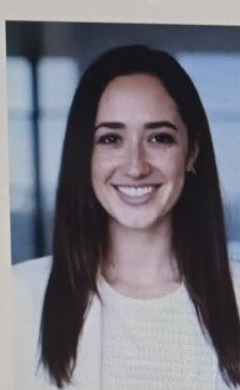
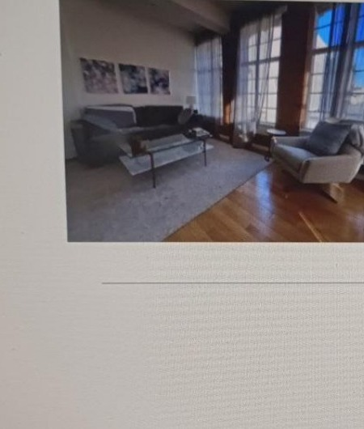
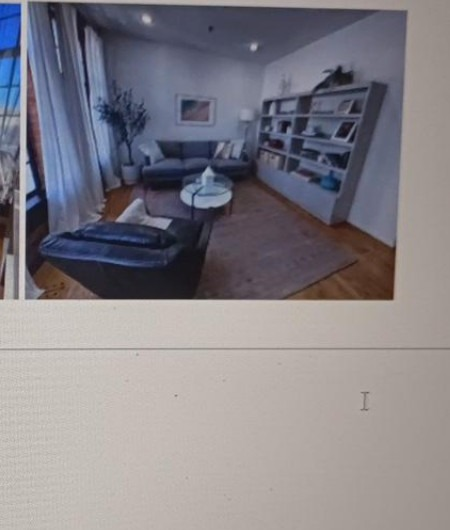

Anxiety & Panic
Support for constant worry, overthinking, physical tension, difficulty sleeping, and the feeling that you're always bracing for something to go wrong.
Explore support →Santa Monica, California · In-person & telehealth
A warm, collaborative space for adults navigating anxiety, panic, trauma, burnout, perfectionism, and the pressure to keep everything together.

A place to slow down
Dr. Maya Reynolds works with thoughtful, high-achieving adults who feel stuck in overthinking, constant worry, emotional pressure, or the lingering effects of past experiences.

About Dr. Maya Reynolds, PsyD
I'm a licensed clinical psychologist based in Santa Monica, California, offering therapy for adults who feel overwhelmed by anxiety, stress, or the lingering effects of past experiences. Many of the people I work with are high-achieving, thoughtful, and self-aware—but internally feel exhausted, stuck in overthinking, or emotionally on edge.
My work often focuses on anxiety, panic, trauma, and burnout. Clients may be dealing with constant worry, tension in their body, difficulty sleeping, or a sense that they're always bracing for something to go wrong. Others are navigating earlier life experiences that continue to affect relationships, confidence, or their sense of safety.
I believe therapy works best when clients feel respected, understood, and actively involved in the process. The goal is not just symptom relief, but developing insight, resilience, and a stronger relationship with yourself over time.
Areas of focus
Three areas that reflect the concerns Dr. Reynolds most often supports in her practice.
Support for constant worry, overthinking, physical tension, difficulty sleeping, and the feeling that you're always bracing for something to go wrong.
Explore support →Carefully paced trauma work for single-incident experiences and more complex, long-standing patterns connected to childhood, relationships, or chronic stress.
Explore support →A space to slow down and reconnect when years of pushing through stress have left you exhausted, disconnected, or under intense internal pressure.
Explore support →A grounded approach
Dr. Reynolds takes a warm, collaborative, and grounded approach to therapy. Sessions are structured enough to feel supportive while still leaving room for reflection and depth.
Her work integrates evidence-based methods such as cognitive-behavioral therapy (CBT), EMDR, mindfulness-based practices, and body-oriented techniques to help clients understand both the emotional and physiological sides of what they're experiencing.
Therapy can become a space to slow down, reconnect, and develop more sustainable ways of living and working.
— Dr. Maya Reynolds, PsyD
Care that meets you where you are
Trauma work is an important part of the practice. The approach is paced carefully, with an emphasis on safety, stabilization, and helping clients feel more regulated in their daily lives—not just during sessions.
In addition to trauma and anxiety, Dr. Reynolds frequently supports clients dealing with professional burnout, perfectionism, and high internal pressure. Entrepreneurs, creatives, and professionals may find therapy becomes a place to slow down, reconnect, and build more sustainable ways of living and working.
Our Office
Dr. Maya Reynolds' Santa Monica office is designed to feel quiet, comfortable, and welcoming from the moment you arrive.
Natural light, comfortable seating, and an uncluttered environment create space for reflection and meaningful therapeutic work.
The office offers in-person therapy for adults, while secure telehealth sessions are also available for clients located throughout California.
Therapy is easier to engage with when you feel safe, respected, and comfortable. The office is intentionally kept calm and uncluttered so you can focus on yourself and the work you're doing.
Frequently asked questions
Her practice focuses on adults who are navigating anxiety, panic, trauma, burnout, perfectionism, stress, and the effects of earlier life experiences.
Dr. Reynolds integrates cognitive-behavioral therapy (CBT), EMDR, mindfulness-based practices, and body-oriented techniques.
Yes. Secure telehealth sessions are available for clients located in California. In-person therapy is offered from the Santa Monica office.
Trauma work is paced carefully, with an emphasis on safety, stabilization, and helping clients feel more regulated in everyday life.
Take the next step
If you want support that is warm, collaborative, and grounded, Dr. Maya Reynolds may be a good fit for your next step.